Locații de nuntă în județul Caraș-Severin
- locații în director
- 23
- cu cazare în registrul SITUR
- 8
- medie ponderată Google
- 4,5 / 5
- evaluări Google
- 14.422
Cum alegi unde mergi la vizionare
Băile Herculane, Borlova și localitățile de pe Dunăre oferă puncte de plecare diferite pentru un weekend de nuntă. Înainte să grupați două vizionări, verificați traseul real dintre ele. La pensiuni merită discutat și cum ajung de la camere la ceremonie invitații cu mobilitate redusă.
La Complex Turistic Cetatea Drencova, un părinte menționează locul de joacă. Pentru o familie cu copii, alegeți la vizionare o masă de la care să îl puteți vedea. La o alternativă din Băile Herculane sau Borlova, faceți aceeași probă de la locul în care se adună adulții. Veți compara două zile de nuntă așa cum le-ar trăi familia.
Două adrese pentru o zi de vizionări
Pe hartă, între aceste două proprietăți sunt 4,5 km în linie dreaptă. Deschide indicațiile de drum din fișe ca să vezi traseul pe șosea înainte de a stabili a doua întâlnire.
- Conacul Pescarului · 327027 Cozla
- Pensiunea Ecaterina · Soseaua Principala Nr. 542, 327025 Berzasca
Explorează după localitate
Toate locațiile din județul Caraș-Severin
Ordinea ține cont de nota Google și de numărul evaluărilor. Cum calculăm ordinea
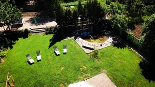
Fotografie a locației · Sursa fotografiei Eftimie Murgu · Cazare în regim hotelier
Pensiunea DANIELI
Pensiunea DANIELI, Eftimie Murgu. În grădina Pensiunii Danieli, un oaspete descrie iazul cu nuferi, balansoarele, terasa și un loc pentru grătar.
Comuna Eftimie Murgu ,str.Principala ,nr.294 294, Principala, 327190 Eftimie Murgu+40 784 074 394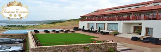
Fotografie a locației · Sursa fotografiei Berzasca · Pensiune
Pensiunea Ecaterina
Pensiunea Ecaterina, Berzasca. La Berzasca, un oaspete al pensiunii Ecaterina își amintește în primul rând felul în care se vede Dunărea.
Soseaua Principala Nr. 542, 327025 Berzasca+40 737 314 714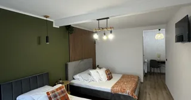
Fotografie a locației · Sursa fotografiei Poiana Mărului · Bed & Breakfast
Pensiunea Florina “Casa departe de casă”
Pensiunea Florina “Casa departe de casă”. Verificați ce se poate vedea de la masă și care locuri sunt destinate doar oaspeților cazați.
strada principala nr 161, 327439 Poiana Mărului+40 723 618 074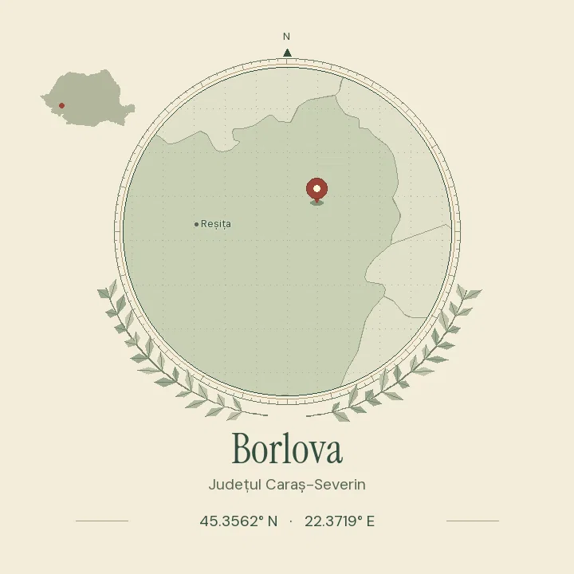
Hartă ilustrată Borlova · Cazare
Conacul Vânătorului
Pensiune cu restaurant în Borlova, cu vedere la munți și gazde lăudate pentru generozitate. Prețuri din recenzii și întrebări pentru o petrecere mică.
Principală 409 Borlova, 327406 Borlova+40 737 123 279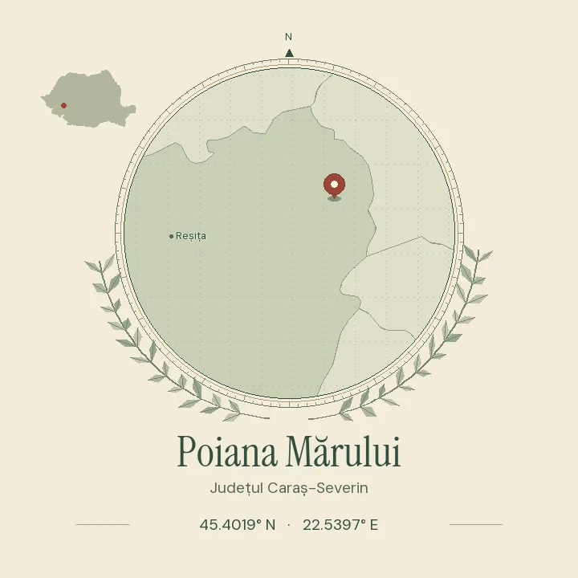
Hartă ilustrată Poiana Mărului · Bed & Breakfast
Vila Şucu
Vila Şucu. În pensiune sunt expuse fotografii din călătoriile lor, iar pentru plimbările din weekend oferă recomandări de trasee prin Munții Țarcu.
118A, 327439 Poiana Mărului+40 742 212 654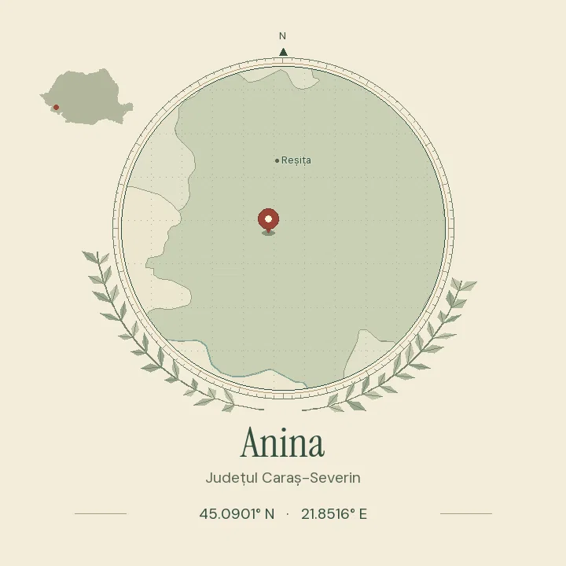
Hartă ilustrată Anina · Cazare
Pensiunea Anina
Pensiunea Anina. Unul dintre cele mai concrete portrete ale pensiunii din Anina vine de la un oaspete care a dormit într-o cameră cu baldachin.
Strada Miniş 4, 325100 Anina+40 745 152 770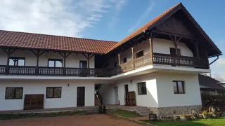
Fotografie a locației · Sursa fotografiei Marga · Bed & Breakfast
PensiuneaAlexMarga
PensiuneaAlexMarga. Pentru un weekend în care familia rămâne după nuntă, poți cere dinainte un exemplu de mic dejun, cu porțiile și ora servirii.
Nr. 178, PensiuneaAlex, 327260 Marga+40 735 513 301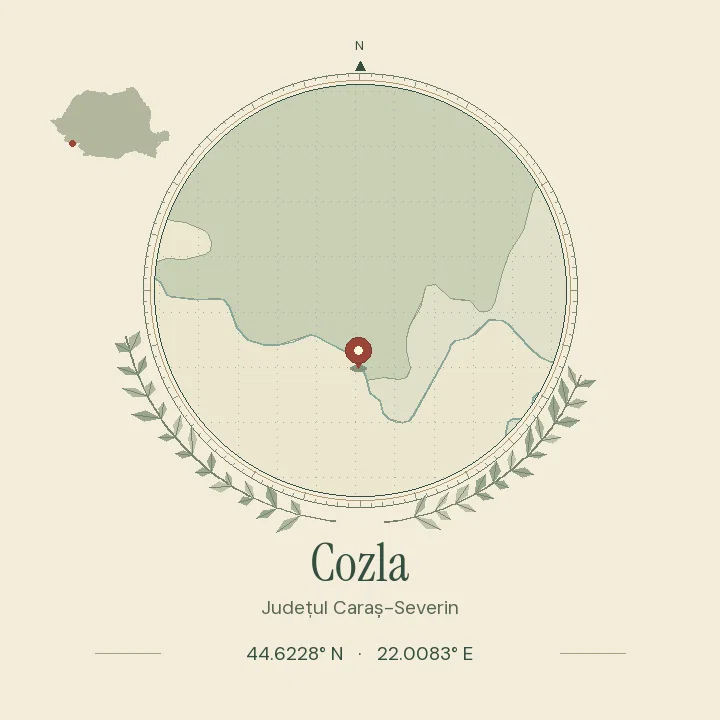
Hartă ilustrată Cozla · Cazare în regim hotelier
Conacul Pescarului
Conac pentru grupuri la Cozla, cu 5 camere, piscină, cinci pontoane de pescuit și cuptor de pizza; nunțile nu sunt documentate.
327027 Cozla+40 733 790 908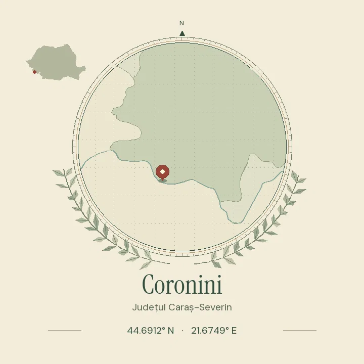
Hartă ilustrată Coronini · Cabană de camping
Cabana Vărad
Cabana Vărad. Dacă ideea voastră este să stați cu familia la Coronini înainte de cununie, aflați de la proprietar de unde se vede cel mai bine apa.
DN57, 327160 Coronini+40 727 625 258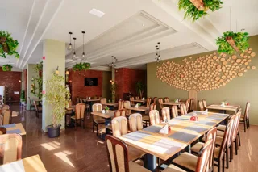
Fotografie a locației · Sursa fotografiei Băile Herculane · Hotel
Bacolux Diana, Herculane
Hotel din Băile Herculane cu 7.390 de evaluări, două restaurante, spa și piscine. Ce spun oaspeții despre apă, parcare și rezervări.
Strada Complexelor nr. 8, 325200 Băile Herculane+40 371 057 070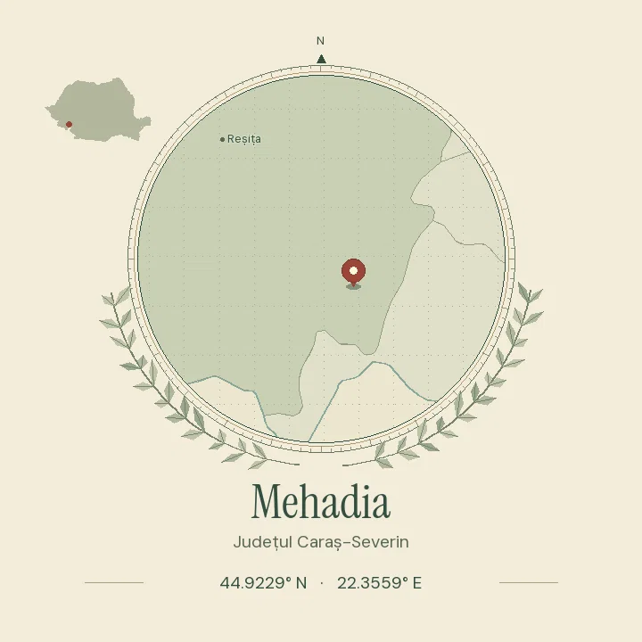
Hartă ilustrată Mehadia · Cabană
Conacul Lacurilor
Conacul Lacurilor, Mehadia. Nu precizează în ce fel a fost folosit restaurantul sau dacă a participat la o petrecere.
Nr 981, 327270 Mehadia+40 746 034 145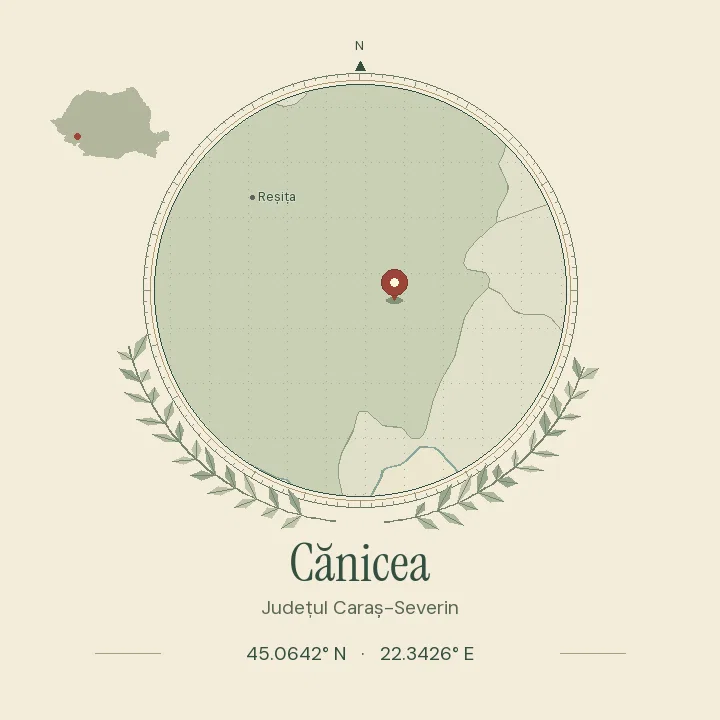
Hartă ilustrată Cănicea · Grădină
La Conac la Nicolae
În imaginea de la La Conac la Nicolae se disting rânduri de pomi și un drum de pământ pe o pantă ușoară, cu dealurile în fundal.
Cănicea, 327185 Caraș-Severin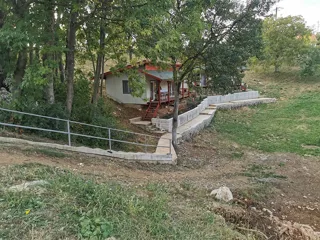
Fotografie a locației · Sursa fotografiei Gârnic · Hotel
Pensiunea Gernik 100
Pensiunea Gernik 100, Gârnic. Este un indiciu despre felul în care se poate simți un weekend petrecut aici cu rudele apropiate.
Str. Principala 100C, 327215 Gârnic+40 729 110 033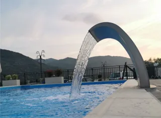
Fotografie a locației · Sursa fotografiei Drencova · Hotel
Complex Turistic Cetatea Drencova
Hotel cu vedere la Dunăre în Drencova, cu piscină acoperibilă și două jacuzzi pe terasă; 4,5 din 122 de evaluări. Plusuri și minusuri reale.
Strada Principală, 327025 Drencova+40 790 779 224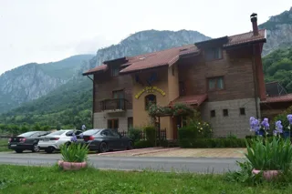
Fotografie a locației · Sursa fotografiei Băile Herculane · Pensiune
Pensiunea Roua De Munte -Cazare Baile Herculane
Pensiunea Roua De Munte -Cazare Baile Herculane. Un smochin și tufele de lavandă i-au rămas în minte unui oaspete cazat la Roua de Munte.
Strada Pecinișca 165, 325200 Băile Herculane+40 723 769 089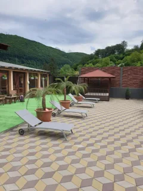
Fotografie a locației · Sursa fotografiei Anina · Bed & Breakfast
Pensiunea Casa Piri
Pensiunea Casa Piri. La Casa Piri merită să desparți pe ofertă lucrurile pe care le vei folosi în curte de cele rezervate pentru oaspeții cazați.
Strada Stadionului 4, 325100 Anina+40 770 927 909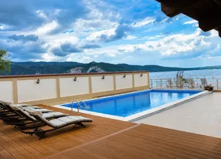
Fotografie a locației · Sursa fotografiei Coronini · Hotel
Pensiunea Elis
Pensiunea Elis, Coronini. La Elis din Coronini, un oaspete descrie terasa restaurantului cu mese și scaune, grădina verde și camerele spațioase.
Strada Principala, 327160 Coronini+40 764 493 109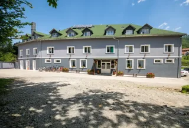
Fotografie a locației · Sursa fotografiei Poiana Mărului · Hotel
Hotel O2 Poiana Marului
Hotel O2 Poiana Marului, Poiana Mărului. La Poiana Mărului, o familie cazată cu bebelușul a remarcat tocmai poziția hotelului pe malul râului.
Poiana Marului Nr. 112, 327439 Poiana Mărului+40 726 458 213Hartă ilustrată Coronini · Bed & Breakfast
Pensiunea Danubio
Pensiunea Danubio, Coronini. La restaurantul pensiunii Danubio, un vizitator a așteptat mai mult de o oră să fie servit.
DN57, 327160 Coronini+40 761 339 629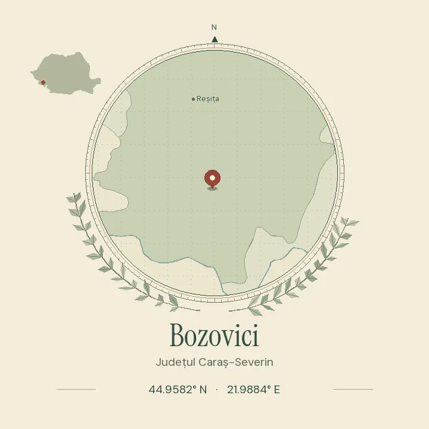
Hartă ilustrată Bozovici · Hotel
Pensiunea La Busu
Pensiunea La Busu, Bozovici. O familie s-a oprit la La Busu pe drumul dintre Cascada Bigăr și Clisura Dunării.
Bozovici+40 743 501 764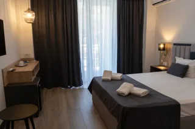
Fotografie a locației · Sursa fotografiei Băile Herculane · Hotel
Hotel Artemis
Hotel Artemis, Băile Herculane. Hotelul Artemis apare într-o relatare despre o singură noapte petrecută în Băile Herculane, în septembrie 2026.
Strada Castanilor 2, 325200 Băile Herculane+40 355 402 377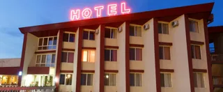
Fotografie a locației · Sursa fotografiei Oravița · Hotel
Hotel Caraş
Hotel în zona gării din Oravița, cu personal lăudat dar camere mici și fără lift. Ce să verifici dacă îți cazezi aici invitații.
Strada Zona Gării C2 - Cămin Nr.2, 325600 Oravița+40 255 573 323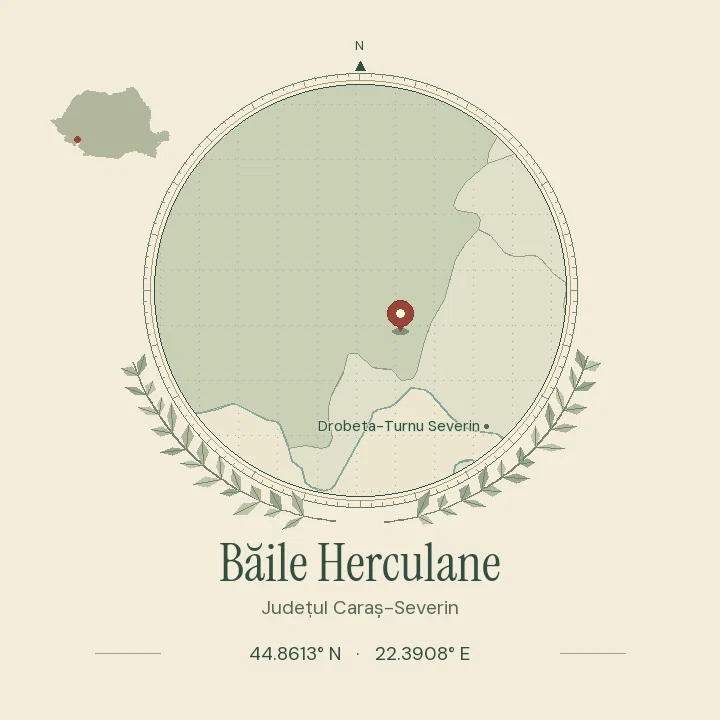
Hartă ilustrată Băile Herculane · Pensiune
Pensiunea Vasy XL
Pensiunea Vasy XL, Băile Herculane. La Vasy XL, un oaspete își amintește de primirea familiei, de camere și de piscină.
Str. Trandafirilor, 128, Baile Herculane, Caras-Severin, 325201, 325200 Băile Herculane+40 769 169 354
Întrebări despre locațiile din județul Caraș-Severin
Unde pot dormi invitații în județul Caraș-Severin?
În registrul de cazare SITUR găsim Pensiunea Ecaterina (16 locuri de cazare), Pensiunea Florina “Casa departe de casă” (14 locuri de cazare), Bacolux Diana, Herculane (440 de locuri de cazare). Verifică ce camere sunt libere pentru noaptea evenimentului.
Ce proprietăți din județul Caraș-Severin au grădină sau terasă?
Pensiunea DANIELI (grădină, terasă); Pensiunea Ecaterina (terasă); Pensiunea Florina “Casa departe de casă” (grădină, terasă, foișor). Cere administratorului condițiile de folosire pentru o petrecere privată.
Care locație din județul Caraș-Severin are cele mai multe evaluări Google?
Bacolux Diana, Herculane are 7.390 de evaluări în profilul Google folosit la documentare. Evaluările acoperă și alte experiențe la proprietate, inclusiv vizitele fără eveniment.